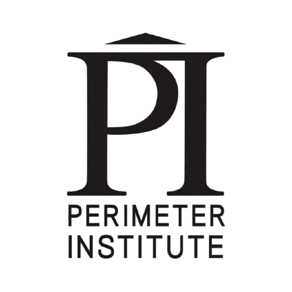
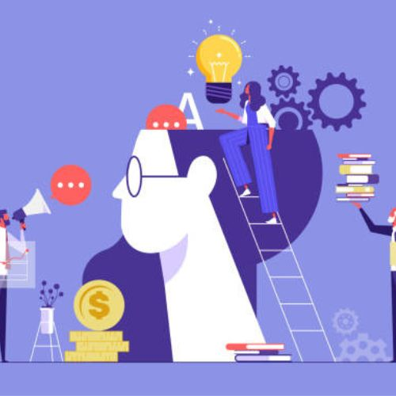
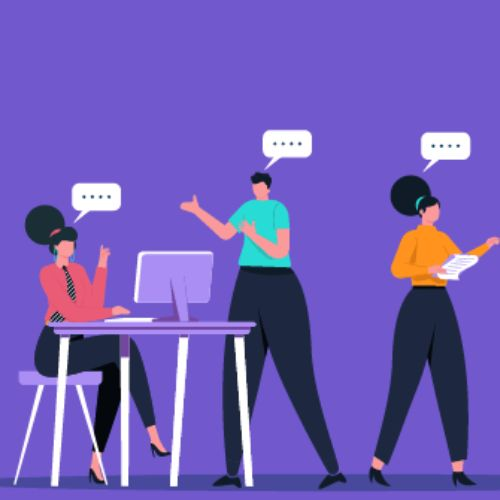
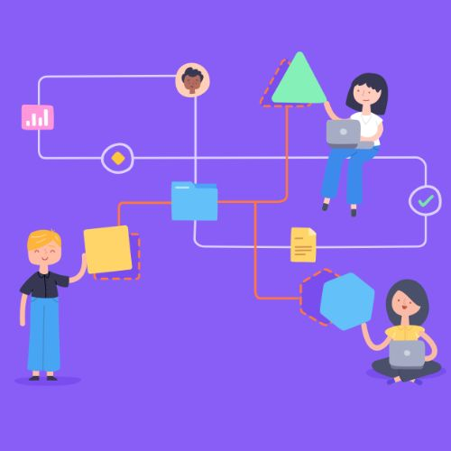
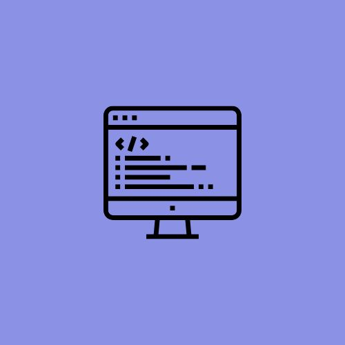
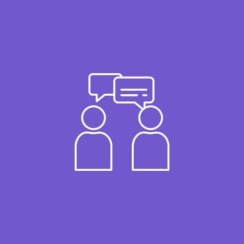

Technology Support Summer Student, May 2025 - Aug 2025
My Role
In this role, I provided technical support and training to end-users, triaged tickets, and created user-friendly documentation to support internal processes. I also built a knowledge base on SharePoint to make IT resources more accessible. Throughout the term, I contributed to projects such as the Sophos license cleanup, asset inventory updates, and assisted with testing for AV recordings. I also helped plan the intern-led community night event, making it a well-rounded and rewarding experience.
Employer Information
Perimeter Institute is a world-renowned research centre focused on theoretical physics, where scientists from around the world explore complex and interesting questions about the universe. PI researches various things such as space, time, matter and even quantum theory! Perimeter is driven by collaboration, curiosity, and a strong commitment to advancing both research and education. Whether through innovative training programs or public outreach, Perimeter Institute creates an environment where big ideas thrive and knowledge is continuously shared and expanded.
Within Perimeter, I was a member of the Technology Services team, specifically the Infrastructure and Support Services team. This team is responsible for a number of tasks, such as providing daily IT assistance to all PI residents, including administrative personnel, researchers, and visitors. They help with device setup, troubleshooting, software installation, and more. The infrastructure team performs system updates, regular system patches, and cybersecurity-related activities. Overall, this team is responsible for ensuring that everything functions properly throughout the institute.
Learning Goals
For this work term, I outlined several key learning goals, which I have described below. I developed goals directly related to my job tasks, aiming to master specific skills that would not only benefit my current role but also help me in future work experiences and my academic journey. The skills I focused on included enhancing my knowledge of various systems such as Windows, macOS, and phones, improving my ability to deliver support. These skills are crucial for my professional growth and will significantly impact my ability to handle complex tasks in future work terms. Overall, these goals have set a strong foundation for my career development and will guide my learning in future roles.

Creativity
Firstly, I aimed to improve my creativity skills to learn how to approach technical problems in an effective way. In technology, no two issues are the same, so being able to creatively solve problems is a valuable asset. To build this skill, I started to shadow my coworkers to see how they handled various tickets. Furthermore, I knew that if I learned to look at issues more deeply, I would be able to achieve this goal which is why I started using the tools I had available to learn more about the issue I was facing. Success was measured by whether I could solve tickets on my own without relying on help from my coworkers, and if I felt more confident when approaching new problems. A bonus would be receiving positive feedback from my coworkers regarding my ability to solve problems in a creative manner.

Technological Literacy
In this role, my goal was to strengthen my technological literacy by becoming more confident using a range of systems and devices. I planned to achieve this by exploring platforms such as Jira, Airtable, Microsoft 365, Okta, Salesforce, and SharePoint, while asking questions when needed. Furthermore, I tried gaining hands-on experience through support tasks. I also aimed to troubleshoot issues independently and build a personal reference guide for common problems. Success was measured by my ability to resolve software and hardware issues across multiple platforms, explain technical solutions clearly, and contribute more confidently to team tasks and client support.

Personal Organization/Time-Management
Another goal was to excel in personal organization and time management to effectively handle responsibilities such as managing tickets, various projects, and the intern community night. I planned to achieve this by using the calendar to schedule tasks and a personal planner to prioritize daily activities. My success was measured by consistently completing tasks before their deadlines and maintaining a balanced workload without burnout. Effective use of these tools to stay organized and meet all responsibilities efficiently was key to my success.

Teamwork
One of my goals was to strengthen my teamwork skills by learning how to work more effectively with different kinds of people. Since I interact with a lot of different teammates day-to-day, I wanted to make sure I was communicating clearly, being open to different perspectives, and contributing positively to the team. To do this, I focused on listening more actively, asking questions when I wasn’t sure about something, and offering help when others seemed overwhelmed. I also tried to be approachable and open to feedback so I could keep improving. I knew I was making progress when working with others started to feel more collaborative and smooth. If teammates came to me for help or included me in more discussions, it was a good sign that I was contributing well.

Problem-Solving
During my co-op term, I wanted to improve my problem-solving skills by tackling issues with more reasoning and confidence. Whether it be a technical issue, a project block, or something unexpected, I focused on breaking down problems, identifying core causes, and testing multiple solutions before jumping to conclusions. I made a conscious choice to ask more questions, learn from previous experiences, and see how my coworkers handled similar situations. When I found something unknown, I used it as a learning opportunity, doing my own research and testing before seeking assistance. Success was assessed by my ability to solve more problems on my own, increased confidence in managing unfamiliar jobs, and positive comments or trust from my team when taking on more challenging responsibilities.
Accomplishments

Creativity
To achieve this, I made sure to shadow my coworkers on tickets they were working on so I was able to understand how to troubleshoot specific issues. I efficiently handled tickets, including new laptop setups, all while aiming to resolve each ticket within a week at most. I focused on making sure I got a lot of exposure to different kinds of problems so that I was more effective in solving tickets. My efforts allowed me to become an effective team member and provide reliable support to end users.
Technological Literacy
To accomplish this goal, I quickly familiarized myself with Jira, SharePoint, and Okta by exploring their features and seeking guidance when needed. I also gained hands-on experience troubleshooting different devices, including both Mac and Windows systems. This approach helped me build confidence in resolving issues independently. I knew I was making progress when I could handle most software and hardware problems on my own without second-guessing or escalating, resolve tickets across multiple platforms, and clearly explain technical solutions to others.
Personal Organization/Time-Management
To stay organized and manage my responsibilities effectively, I relied on my calendar and daily task lists to prioritize and track progress. By starting projects early and maintaining a clear overview of my workload, I successfully completed tasks, met deadlines, and balanced my workload, ensuring productivity and preventing burnout.
Teamwork
To achieve this goal, I actively contributed to team meetings by sharing updates, participating in discussions, and seeking support when needed, fostering collaboration within the team. Staying organized allowed me to efficiently manage my workload, take on additional responsibilities, and contribute to different tasks, documentation enhancements, consistently supporting the team's success.
Problem-Solving
To achieve this goal, I tried to be more cautious in how I tackled each issue. Instead of jumping to a solution, I took a step back to analyze the entire situation and determine what was causing it. I asked a lot of questions to my team members, especially when things were unclear, and I looked to identify patterns in the types of tickets I received. I also paid close attention to how my coworkers dealt with challenges and learnt a lot from hearing them express their thought process. When I came across something unfamiliar, I tried researching more about it using Google or other tools to try and solve it on my own before asking for help. Over time, these habits helped me feel more confident and independent when working through tickets and other technical challenges.
Job Description
In this role, I provided support to admin staff, faculty, researchers, and visitors at Perimeter Institute. I maintained internal documentation and created a knowledge base on SharePoint for the IT Service Desk to ensure important information was easily accessible. I also responded to client support requests and assisted with various internal projects throughout the term.
Some of the key projects I worked on included helping with the Sophos license cleanup, cleaning up and updating the Airtable asset inventory, and creating clear, detailed internal documentation for IT processes. I also contributed to the planning of a community night event with other interns, which brought the PI community together.
To become successful in this role, I drew on both my technical and communication skills. As a computer science student, I was already comfortable with troubleshooting from regularly working through coding issues, where things rarely work perfectly on the first try. This mindset helped me approach technical problems patiently and logically. Strong communication skills were also key, especially when documenting processes or supporting clients with varying levels of technical experience. In conclusion, these skills helped me contribute effectively to my team and complete my projects with confidence.
Reflection
During my co-op term, I focused on both technical and personal growth, learning various tools and systems to excel in my role as a Technology Support Summer Student. Handling support tickets improved my problem-solving and communication skills, enabling me to simplify complex concepts for individuals with varying technical expertise. By balancing multiple projects, I improved my time management and organizational abilities. Active participation in team meetings and contributing to high-priority tasks, strengthened my collaboration skills. Overall, these experiences not only enhanced my technical proficiency and adaptability but also solidified my confidence in tackling new challenges. Through various support requests, I gained a deeper understanding of efficient troubleshooting practices and expanded my expertise in different systems and devices such as Windows and macOS.
Acknowledgments
I am incredibly grateful to my manager, Mike, and the entire Service Desk team for all the support, guidance, and collaboration during my time in this role. I learned so much from their experience and appreciated how welcoming and patient everyone was as I settled in. Their mentorship helped me grow both personally and professionally, and I am truly thankful for the opportunity to work alongside such a kind, knowledgeable, and dedicated team.